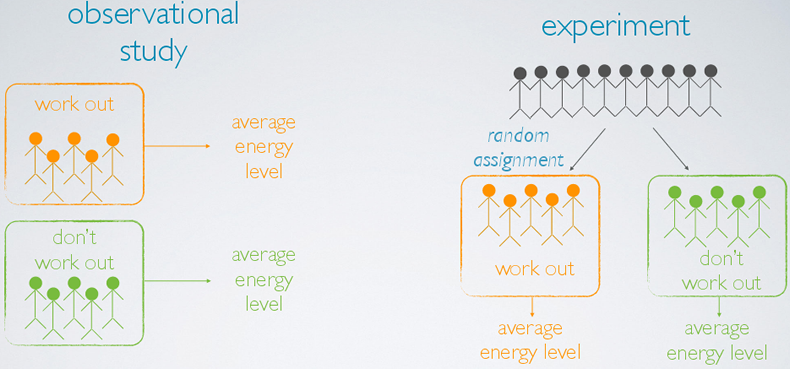

This course will provide an introduction to study design and proper methods of data collection. Students will gain an overview of the research cycle, basic principles of experimental design, observational studies, effective design of survey instruments, examples of study bias, and ethical considerations in the conduct of research. Prerequisites: STAT 305 - Biometry, △ STAT 310 - Intermediate Statistics, ◆ ECON 322 - Intermediate Statistics for Business and Economics, or instructor permission. Grade only. Offered annually.
